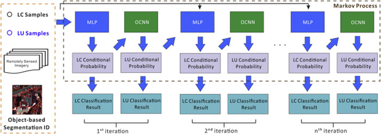
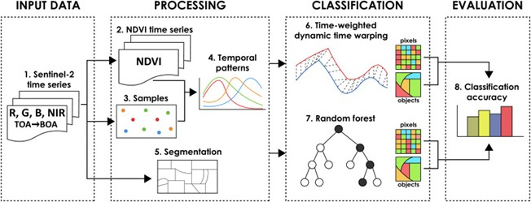
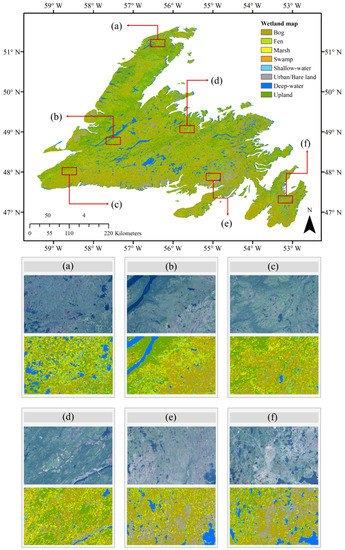

7 Classification I
7.1 Summary
This week I explored classification techniques for remote sensing data, diving into both supervised and unsupervised methods. Having previously studied machine learning fundamentals, I was excited to see how these concepts apply specifically to satellite imagery analysis. I found classification to be a critical step in processing remotely sensed imagery, as it allows pixels to be grouped based on their spectral characteristics to identify land cover types. The lecture introduced various classification algorithms including linear regression, Classification and Regression Trees (CART), Random Forests, and Support Vector Machines (SVM). I was particularly interested in how SVMs work by finding optimal hyperplanes to separate classes with maximum margins, while Random Forests overcome the overfitting limitations of individual decision trees through creating multiple trees and aggregating their predictions. During the practical session, I implemented these techniques in Google Earth Engine, applying classification algorithms to Sentinel imagery to identify different land cover types. I learned about the concept of “black box” algorithms, where the decision-making process remains opaque, making it difficult to interpret why certain pixels are assigned to specific classes. I also realized that supervised classification requires high-quality training data, which can be resource-intensive to create but yields more accurate and reliable results compared to unsupervised methods.
7.2 Applications
Recent literature demonstrates diverse applications of classification techniques in remote sensing. Maxwell et al. (2018) conducted a comprehensive review of machine-learning classification methods in remote sensing, evaluating algorithms such as Random Forest, Support Vector Machine, and k-Nearest Neighbor. Their findings highlighted that Random Forest consistently outperformed other classifiers, achieving overall accuracies exceeding 90% while requiring less computational resources. The study emphasized the advantages of ensemble methods like Random Forest in effectively handling the high dimensionality of remotely sensed data, compared to traditional parametric classifiers.
In a related study, Zhang et al. (2019) explored the application of deep learning techniques, specifically Convolutional Neural Networks (CNNs), for joint land cover and land use classification using high-resolution satellite imagery. Their approach achieved classification accuracies ranging from 87% to 92% across different urban environments. The research demonstrated the ability of CNNs to automatically extract hierarchical features from imagery, reducing the reliance on manual feature engineering required by traditional methods. These advancements underscore the growing importance of machine learning and deep learning in remote sensing applications. 
In agricultural applications, Belgiu and Csillik (2018) applied both pixel-based and object-based classification methods to map crop types using multi-temporal Sentinel-2 imagery. Their approach incorporated phenological information through time series analysis, achieving a 15-20% improvement in classification accuracy compared to single-date imagery classification. The authors highlighted how object-based approaches reduced the “salt-and-pepper” effect common in pixel-based classifications, producing more coherent agricultural field boundaries.

For environmental monitoring, Mahdianpari et al. (2019) utilized Random Forest and SVM classifiers to map wetland types using multi-source remote sensing data, including Sentinel-1 radar and Sentinel-2 optical imagery. Their research demonstrated that integrating different data sources significantly improved classification accuracy, from 71% with optical data alone to 94% with the combined dataset. This multi-source approach proved particularly valuable in areas where cloud cover frequently limits the availability of optical imagery, showcasing the robustness of modern classification techniques in addressing complex environmental mapping challenges.

7.3 Reflection
As I reflect on this week’s content, I’m struck by how classification techniques represent the cornerstone of extracting meaningful information from remote sensing data. I’ve realized that choosing appropriate methods requires careful consideration of data characteristics, research objectives, and available resources. The trade-offs between supervised and unsupervised approaches mirror challenges I’ve encountered in other data science contexts: balancing accuracy with interpretability, and weighing the costs of data preparation against the benefits of more precise results. What I found particularly intriguing was how these seemingly technical choices have profound real-world implications. I immediately thought about applications in China’s “red line” policy for arable land protection, where accurate classification of agricultural land is crucial for monitoring compliance with the national 1.8 billion mu (mu, Chinese unit of land measurement that is commonly 666.7 square metres，120 million hectares) minimum farmland preservation target. These classification techniques could help authorities track land use changes and enforce this critical food security policy more effectively. Looking forward, I believe the evolution of explainable AI approaches could address the “black box” limitations of current classification methods. As I consider my future research interests in urban sustainability, I’m excited about the ability to accurately classify urban land cover and monitor changes over time, though I recognize I’ll need to complement these technical approaches with ground-truth validation and contextual understanding of the areas being studied.
##References Maxwell, A. E. et al. (2018) Implementation of machine-learning classification in remote sensing: an applied review. International journal of remote sensing. [Online] 39 (9), 2784–2817.
Belgiu, M. & Csillik, O. (2018) Sentinel-2 cropland mapping using pixel-based and object-based time-weighted dynamic time warping analysis. Remote sensing of environment. [Online] 204509–523.
Zhang, C. et al. (2019) Joint Deep Learning for land cover and land use classification. Remote sensing of environment. [Online] 221173–187.
Mahdianpari, M. et al. (2019) The first wetland inventory map of newfoundland at a spatial resolution of 10 m using sentinel-1 and sentinel-2 data on the Google Earth Engine cloud computing platform. Remote sensing (Basel, Switzerland). [Online] 11 (1), 43-.